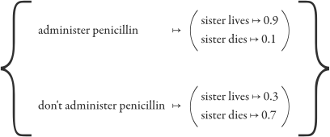
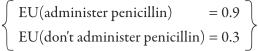

Terminal Values and Instrumental Values
❦
On a purely instinctive level, any human planner behaves as if they distinguish between means and ends. Want chocolate? There’s chocolate at the Publix supermarket. You can get to the supermarket if you drive one mile south on Washington Ave. You can drive if you get into the car. You can get into the car if you open the door. You can open the door if you have your car keys. So you put your car keys into your pocket, and get ready to leave the house…
… when suddenly the word comes on the radio that an earthquake has destroyed all the chocolate at the local Publix. Well, there’s no point in driving to the Publix if there’s no chocolate there, and no point in getting into the car if you’re not driving anywhere, and no point in having car keys in your pocket if you’re not driving. So you take the car keys out of your pocket, and call the local pizza service and have them deliver a chocolate pizza. Mm, delicious.
I rarely notice people losing track of plans they devised themselves. People usually don’t drive to the supermarket if they know the chocolate is gone. But I’ve also noticed that when people begin explicitly talking about goal systems instead of just wanting things, mentioning “goals” instead of using them, they oft become confused. Humans are experts at planning, not experts on planning, or there’d be a lot more AI developers in the world.
In particular, I’ve noticed people get confused when—in abstract philosophical discussions rather than everyday life—they consider the distinction between means and ends; more formally, between “instrumental values” and “terminal values.”
Part of the problem, it seems to me, is that the human mind uses a rather ad-hoc system to keep track of its goals—it works, but not cleanly. English doesn’t embody a sharp distinction between means and ends: “I want to save my sister’s life” and “I want to administer penicillin to my sister” use the same word “want.”
Can we describe, in mere English, the distinction that is getting lost?
As a first stab:
“Instrumental values” are desirable strictly conditional on their anticipated consequences. “I want to administer penicillin to my sister,” not because a penicillin-filled sister is an intrinsic good, but in anticipation of penicillin curing her flesh-eating pneumonia. If instead you anticipated that injecting penicillin would melt your sister into a puddle like the Wicked Witch of the West, you’d fight just as hard to keep her penicillin-free.
“Terminal values” are desirable without conditioning on other consequences: “I want to save my sister’s life” has nothing to do with your anticipating whether she’ll get injected with penicillin after that.
This first attempt suffers from obvious flaws. If saving my sister’s life would cause the Earth to be swallowed up by a black hole, then I would go off and cry for a while, but I wouldn’t administer penicillin. Does this mean that saving my sister’s life was not a “terminal” or “intrinsic” value, because it’s theoretically conditional on its consequences? Am I only trying to save her life because of my belief that a black hole won’t consume the Earth afterward? Common sense should say that’s not what’s happening.
So forget English. We can set up a mathematical description of a decision system in which terminal values and instrumental values are separate and incompatible types—like integers and floating-point numbers, in a programming language with no automatic conversion between them.
An ideal Bayesian decision system can be set up using only four elements:
- Outcomes : type Outcome[]
- list of possible outcomes
- { sister lives, sister dies }
- Actions : type Action[]
- list of possible actions
- { administer penicillin, don’t administer penicillin }
- Utility_function : type Outcome ⇒ Utility
- utility function that maps each outcome onto a utility
- (a utility being representable as a real number between negative and positive infinity)
- Conditional_probability_function :
type Action ⇒ (Outcome ⇒ Probability)- conditional probability function that maps each action onto a probability distribution over outcomes
- (a probability being representable as a real number between 0 and 1)
- 
And the decision system itself?
- Expected_Utility : Action A ⇒
(Sum O in Outcomes: Utility(O) * Probability(O|A))- The “expected utility” of an action equals the sum, over all outcomes, of the utility of that outcome times the conditional probability of that outcome given that action.
- 
- Choose :
⇒ (Argmax A in Actions: Expected_Utility(A))- Pick an action whose “expected utility” is maximal.
- { return: administer penicillin }
For every action, calculate the conditional probability of all the consequences that might follow, then add up the utilities of those consequences times their conditional probability. Then pick the best action.
This is a mathematically simple sketch of a decision system. It is not an efficient way to compute decisions in the real world.
What if, for example, you need a sequence of acts to carry out a plan? The formalism can easily represent this by letting each Action stand for a whole sequence. But this creates an exponentially large space, like the space of all sentences you can type in 100 letters. As a simple example, if one of the possible acts on the first turn is “Shoot my own foot off,” a human planner will decide this is a bad idea generally—eliminate all sequences beginning with this action. But we’ve flattened this structure out of our representation. We don’t have sequences of acts, just flat “actions.”
So, yes, there are a few minor complications. Obviously so, or we’d just run out and build a real AI this way. In that sense, it’s much the same as Bayesian probability theory itself.
But this is one of those times when it’s a surprisingly good idea to consider the absurdly simple version before adding in any high-falutin’ complications.
Consider the philosopher who asserts, “All of us are ultimately selfish; we care only about our own states of mind. The mother who claims to care about her son’s welfare, really wants to believe that her son is doing well—this belief is what makes the mother happy. She helps him for the sake of her own happiness, not his.” You say, “Well, suppose the mother sacrifices her life to push her son out of the path of an oncoming truck. That’s not going to make her happy, just dead.” The philosopher stammers for a few moments, then replies, “But she still did it because she valued that choice above others—because of the feeling of importance she attached to that decision.”
So you say,
TYPE ERROR: No constructor found for
Expected_Utility ⇒ Utility.
Allow me to explain that reply.
Even our simple formalism illustrates a sharp distinction between expected utility, which is something that actions have; and utility, which is something that outcomes have. Sure, you can map both utilities and expected utilities onto real numbers. But that’s like observing that you can map wind speed and temperature onto real numbers. It doesn’t make them the same thing.
The philosopher begins by arguing that all your Utilities must be over Outcomes consisting of your state of mind. If this were true, your intelligence would operate as an engine to steer the future into regions where you were happy. Future states would be distinguished only by your state of mind; you would be indifferent between any two futures in which you had the same state of mind.
And you would, indeed, be rather unlikely to sacrifice your own life to save another.
When we object that people sometimes do sacrifice their lives, the philosopher’s reply shifts to discussing Expected Utilities over Actions: “The feeling of importance she attached to that decision.” This is a drastic jump that should make us leap out of our chairs in indignation. Trying to convert an Expected_Utility into a Utility would cause an outright error in our programming language. But in English it all sounds the same.
The choices of our simple decision system are those with highest Expected_Utility, but this doesn’t say anything whatsoever about where it steers the future. It doesn’t say anything about the utilities the decider assigns, or which real-world outcomes are likely to happen as a result. It doesn’t say anything about the mind’s function as an engine.
The physical cause of a physical action is a cognitive state, in our ideal decider an Expected_Utility, and this expected utility is calculated by evaluating a utility function over imagined consequences. To save your son’s life, you must imagine the event of your son’s life being saved, and this imagination is not the event itself. It’s a quotation, like the difference between “snow” and snow. But that doesn’t mean that what’s inside the quote marks must itself be a cognitive state. If you choose the action that leads to the future that you represent with “my son is still alive,” then you have functioned as an engine to steer the future into a region where your son is still alive. Not an engine that steers the future into a region where you represent the sentence “my son is still alive.” To steer the future there, your utility function would have to return a high utility when fed “ “my son is still alive” ”, the quotation of the quotation, your imagination of yourself imagining. Recipes make poor cake when you grind them up and toss them in the batter.
And that’s why it’s helpful to consider the simple decision systems first. Mix enough complications into the system, and formerly clear distinctions become harder to see.
So now let’s look at some complications. Clearly the Utility function (mapping Outcomes onto Utilities) is meant to formalize what I earlier referred to as “terminal values,” values not contingent upon their consequences. What about the case where saving your sister’s life leads to Earth’s destruction by a black hole? In our formalism, we’ve flattened out this possibility. Outcomes don’t lead to Outcomes, only Actions lead to Outcomes. Your sister recovering from pneumonia followed by the Earth being devoured by a black hole would be flattened into a single “possible outcome.”
And where are the “instrumental values” in this simple formalism? Actually, they’ve vanished entirely! You see, in this formalism, actions lead directly to outcomes with no intervening events. There’s no notion of throwing a rock that flies through the air and knocks an apple off a branch so that it falls to the ground. Throwing the rock is the Action, and it leads straight to the Outcome of the apple lying on the ground—according to the conditional probability function that turns an Action directly into a Probability distribution over Outcomes.
In order to actually compute the conditional probability function, and in order to separately consider the utility of a sister’s pneumonia and a black hole swallowing Earth, we would have to represent the network structure of causality—the way that events lead to other events.
And then the instrumental values would start coming back. If the causal network was sufficiently regular, you could find a state B that tended to lead to C regardless of how you achieved B. Then if you wanted to achieve C for some reason, you could plan efficiently by first working out a B that led to C, and then an A that led to B. This would be the phenomenon of “instrumental value”—B would have “instrumental value” because it led to C. The state C itself might be terminally valued—a term in the utility function over the total outcome. Or C might just be an instrumental value, a node that was not directly valued by the utility function.
Instrumental value, in this formalism, is purely an aid to the efficient computation of plans. It can and should be discarded wherever this kind of regularity does not exist.
Suppose, for example, that there’s some particular value of B that doesn’t lead to C. Would you choose an A which led to that B? Or never mind the abstract philosophy: If you wanted to go to the supermarket to get chocolate, and you wanted to drive to the supermarket, and you needed to get into your car, would you gain entry by ripping off the car door with a steam shovel? (No.) Instrumental value is a “leaky abstraction,” as we programmers say; you sometimes have to toss away the cached value and compute out the actual expected utility. Part of being efficient without being suicidal is noticing when convenient shortcuts break down. Though this formalism does give rise to instrumental values, it does so only where the requisite regularity exists, and strictly as a convenient shortcut in computation.
But if you complicate the formalism before you understand the simple version, then you may start thinking that instrumental values have some strange life of their own, even in a normative sense. That, once you say B is usually good because it leads to C, you’ve committed yourself to always try for B even in the absence of C. People make this kind of mistake in abstract philosophy, even though they would never, in real life, rip open their car door with a steam shovel. You may start thinking that there’s no way to develop a consequentialist that maximizes only inclusive genetic fitness, because it will starve unless you include an explicit terminal value for “eating food.” People make this mistake even though they would never stand around opening car doors all day long, for fear of being stuck outside their cars if they didn’t have a terminal value for opening car doors.
Instrumental values live in (the network structure of ) the conditional probability function. This makes instrumental value strictly dependent on beliefs-of-fact given a fixed utility function. If I believe that penicillin causes pneumonia, and that the absence of penicillin cures pneumonia, then my perceived instrumental value of penicillin will go from high to low. Change the beliefs of fact—change the conditional probability function that associates actions to believed consequences—and the instrumental values will change in unison.
In moral arguments, some disputes are about instrumental consequences, and some disputes are about terminal values. If your debating opponent says that banning guns will lead to lower crime, and you say that banning guns will lead to higher crime, then you agree about a superior instrumental value (crime is bad), but you disagree about which intermediate events lead to which consequences. But I do not think an argument about female circumcision is really a factual argument about how to best achieve a shared value of treating women fairly or making them happy.
This important distinction often gets flushed down the toilet in angry arguments. People with factual disagreements and shared values each decide that their debating opponents must be sociopaths. As if your hated enemy, gun control/rights advocates, really wanted to kill people, which should be implausible as realistic psychology.
I fear the human brain does not strongly type the distinction between terminal moral beliefs and instrumental moral beliefs. “We should ban guns” and “We should save lives” don’t feel different, as moral beliefs, the way that sight feels different from sound. Despite all the other ways that the human goal system complicates everything in sight, this one distinction it manages to collapse into a mishmash of things-with-conditional-value.
To extract out the terminal values we have to inspect this mishmash of valuable things, trying to figure out which ones are getting their value from somewhere else. It’s a difficult project! If you say that you want to ban guns in order to reduce crime, it may take a moment to realize that “reducing crime” isn’t a terminal value, it’s a superior instrumental value with links to terminal values for human lives and human happinesses. And then the one who advocates gun rights may have links to the superior instrumental value of “reducing crime” plus a link to a value for “freedom,” which might be a terminal value unto them, or another instrumental value…
We can’t print out our complete network of values derived from other values. We probably don’t even store the whole history of how values got there. By considering the right moral dilemmas, “Would you do X if Y, ” we can often figure out where our values came from. But even this project itself is full of pitfalls; misleading dilemmas and gappy philosophical arguments. We don’t know what our own values are, or where they came from, and can’t find out except by undertaking error-prone projects of cognitive archaeology. Just forming a conscious distinction between “terminal value” and “instrumental value,” and keeping track of what it means, and using it correctly, is hard work. Only by inspecting the simple formalism can we see how easy it ought to be, in principle.
And that’s to say nothing of all the other complications of the human reward system—the whole use of reinforcement architecture, and the way that eating chocolate is pleasurable, and anticipating eating chocolate is pleasurable, but they’re different kinds of pleasures…
But I don’t complain too much about the mess.
Being ignorant of your own values may not always be fun, but at least it’s not boring.